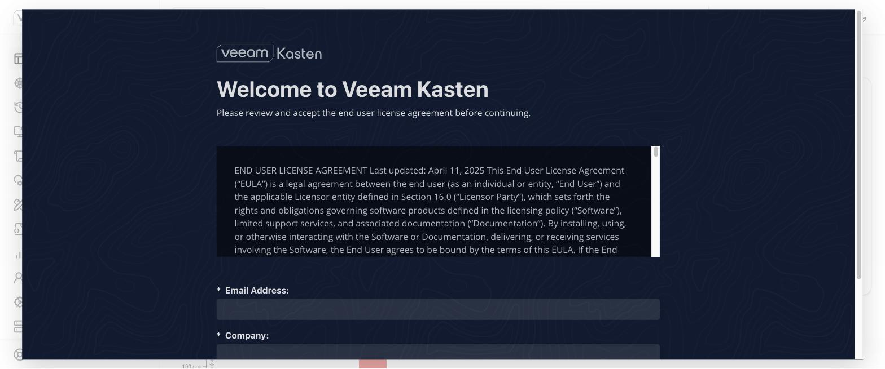
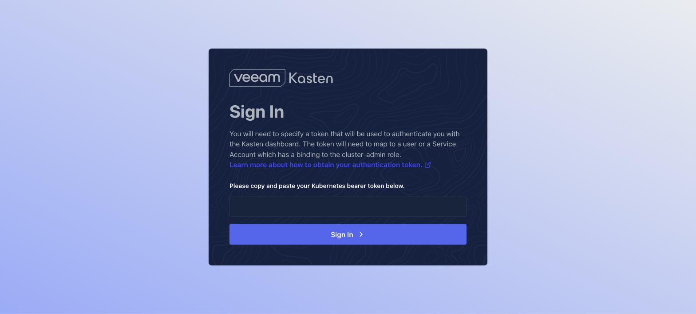
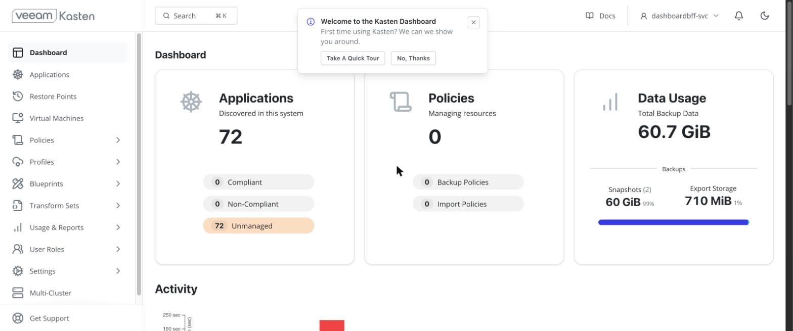
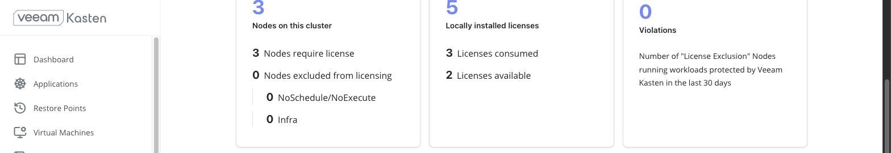

Snapshots and backups
By the end you can say what a VM snapshot is for and what it is not, spot a backup that looks fine and holds nothing, and choose between the four ways to protect a VM.
Northgate Freight is a made-up company. Its admins snapshot VMs before a change and back them up with a product. On ROVS there are four ways to protect a VM, and they are not interchangeable.
Every command, output and screen in this unit comes from real runs on lab clusters, recorded in tutorial chapters 43, 105, 106 and 107. The review question repeats one from unit 1.2.
What a VM snapshot is for
A snapshot captures the state of a VM's disks at a point in time. It is for a quick rollback before a change, such as a patch. It lives on the same Ceph cluster as the VM, so it is not a backup.
A widely copied snippet says virtctl snapshot create. Does it work?
Show the answer
This was checked on virtctl 1.9.0. Red Hat's 4.21 procedure is object-based too: you create a VirtualMachineSnapshot. It is crash-consistent by default. For an application-consistent snapshot the QEMU guest agent must run inside the VM, and KubeVirt freezes the guest filesystems first.
A backup routine snapshots VMs only while they run. Can you restore from those snapshots?
Show the answer
Nothing tells you until you try.An online snapshot is not a restore source. The run in the chapter restored from a snapshot taken while the VM was stopped. A restore from an online snapshot was not attempted.
A file is written in the guest. The VM is stopped and snapshotted. The file is deleted. The VM is stopped again and restored. What does the guest show?
Show the answer
The restore replaced the whole disk contents, not only the parts that changed. On one small test disk the snapshot was ready in 3.5 seconds and the restore completed in 2.4, polled once a second. Do not extrapolate to a large or busy disk: time your own. The chapter also notes that the digest it recorded is one hex character short of a valid SHA-256, so read this as a recorded match, not an exact value.
From vSphere: roughly like a VMware snapshot, with differences. VMware keeps a chain of delta disks and can include memory state, and the VM can run during a restore. Here each snapshot is an independent point in time, disk only, and the VM must be stopped to restore. A rough mapping, not an IBM statement.
A green backup with an empty disk
Northgate backs up a running VM with OADP and defaultVolumesToFsBackup: true, the setting most OADP guides use. The namespace is deleted, restored, and the VM comes back Running. This is what the backup said.
level=warning msg="volume root declared in pod .../virt-launcher-vm-backup-test-... is a block volume. Block volumes are not supported for fs backup, skipping" PHASE ITEMS ERRORS WARNINGS Completed 60/60 0 2
The restore completed and the VM is Running. Is the data there?
Show the answer
A ROVS VM's root volume is volumeMode: Block on ODF RBD, and file-system backup cannot read a block volume. In the run, guestfish on the restored volume said "no operating system was found on this disk". The volumes that were backed up were the launcher pod's ephemeral ones. None of them is the VM.
Which setting backs the disk up?
Show the answer
Let the CSI plugin take a snapshot. Velero only uses a snapshot class that carries its label, and without it the CSI path silently does nothing too: oc label volumesnapshotclass ocs-storagecluster-rbdplugin-snapclass velero.io/csi-volumesnapshot-class=true. A running Fedora VM with a 30 GiB disk then backed up in 22 seconds with 0 warnings and 0 errors, and restored in 23 seconds. A token written into the guest matched.
Watch for this. Kasten is different here. When a disk cannot be exported, it refuses and says why. OADP completed and restored a blank disk. And spell out oc get backups.velero.io -n openshift-adp: three resource types are called backups, and oc get backup may pick another.
Which protection does Northgate pick?
Four needs. Pick an approach for each, then read what the chapters say.
Northgate patches a VM tonight and wants a quick way back if the patch goes wrong.
Show the answer
Snapshots are for quick rollback before changes: short term, same cluster, and not a backup. Take the snapshot while the VM is stopped if you may need to restore from it.
Northgate wants scheduled VM backups with retention, application-consistent, with a copy off the cluster. It wants the path IBM documents.
Show the answer
Kasten is IBM's documented path for production VM protection: scheduled backups, retention policies, application-consistent freeze and export off the cluster. It needs an enterprise licence beyond five worker nodes. The sources disagree on whether the free licence may be used in production, so get the position in writing.
Northgate is building Regional DR with ODF and RHACM and needs the resource definitions captured.
Show the answer
IBM's design material positions OADP as the Kubernetes-metadata half of a DR pairing: ODF Regional DR replicates the volumes, RHACM orchestrates failover and OADP captures the definitions. It does not present OADP as a standalone VM backup product, and in IBM's Regional DR runbook it is optional and yours to update.
Northgate wants IBM's managed service, IBM Cloud Backup and Recovery, for its ROVS VMs. What is the honest answer?
Show the answer
IBM offers VM backup only as a preview in au-syd, says it is not recommended for production, and does not name ROVS. au-syd has no VPC bare metal, so no ROVS cluster can run there. On a ROVS cluster in eu-de it backed up and restored a Linux VM and a Windows Server 2022 VM, and restored to a second cluster in the same region. It cannot restore one file: you restore the whole disk. Treat it as a proof of concept.
Watch for this. ODF runs on local NVMe in your workers, so the storage fails with the workers. A backup in the same region does not survive the event most DR plans are written for. Rehearse a restore and time it: the measured time is your actual RTO.
From vSphere: OADP is closest to vSphere Replication, and Kasten to Veeam Backup & Replication. VSS quiescing maps to the QEMU guest agent freeze. Changed Block Tracking is not available. Rough mappings, not IBM statements.
Open the Kasten dashboard
These screens come from a lab cluster. The install, policy, backup and restore steps ran from the command line and never showed a licence agreement. The dashboard does. Click where you would click. After two misses the right place is marked.

You open the Kasten dashboard for the first time. What must you fill in before it lets you in?
Show where
Right. Email Address and Company, both required. "No registration needed" is true of the API and false of the UI. Someone has to accept a licence agreement for the organisation, which is a decision rather than a click.

Next it asks for a bearer token. Where do you paste it?
Show where
Right. Kasten already creates a service account with the binding it needs, so you grant nothing new. Make a token with oc create token dashboardbff-svc -n kasten-io --duration=2h.

You are in. Which entry in the left menu takes you to your VMs?
Show where
Right. Virtual Machines is a first-class item in the navigation. This dashboard showed 72 applications discovered, 0 policies and 60.7 GiB of backup data.

Which box shows the number the licence is counted in?
Show where
Right. Nodes on this cluster. Kasten counts worker nodes, not VMs, so the number of VMs you protect is irrelevant. The starter licence allows 5 nodes. The trial licence allowed 500 for 59 more days when the page was captured. The licence secret said 10 while the product said 5, and the dashboard is what enforces.
Four questions
An OADP backup of a ROVS VM shows Completed with 0 errors and 2 warnings. What do you suspect?
Show the answer
Read the warnings in the logs. Use defaultVolumesToFsBackup: false and label the snapshot class.
Why is a VM snapshot not a backup?
Show the answer
A snapshot is a rollback mechanism. Whatever you choose for backup, at least one copy must leave the cluster, and the region.
A Kasten backup goes green, then the export to object storage fails on a VM disk. What is the fix?
Show the answer
The VM disk is volumeMode: Block, and the export fails with "volume's storage class does not support block mode export". The same policy re-run after the annotation exported, and 69 objects appeared in the bucket.
Review from unit 1.2. What backs a VM disk on ROVS, in the place of a VMDK?
Show the answer
Each VM disk is backed by a PVC. A StorageClass is the type of storage the PVC asks for, so it is closer to a datastore.
You can choose how to protect a VM
A snapshot is a rollback, taken offline if you will restore from it. A green backup can hold an empty disk. Kasten is IBM's documented path for scheduled VM backup, OADP is the metadata half of a DR design, and IBM's managed service is a proof of concept on ROVS.
Tutorial chapter 43, Protect ROVS VMs with snapshots and pick a backup tool, runs the snapshot steps. Chapters 105, 106 and 107 cover OADP, Kasten and IBM Cloud Backup and Recovery.